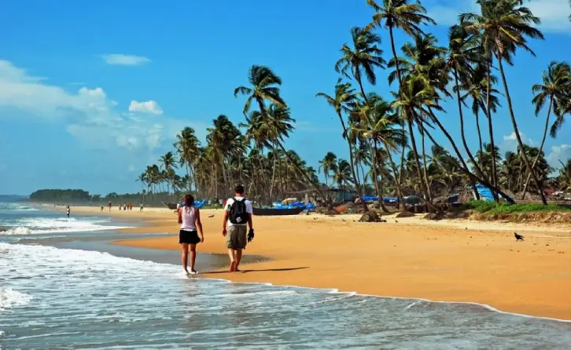

|
|
Home | About | Reviews | Articles | Contact |
| Goa is a state on the southwestern coast of India within the Konkan region, geographically separated from the Deccan highlands by the Western Ghats. It is located between the Indian states of Maharashtra to the north and Karnataka to the east and south, with the Arabian Sea forming its western coast. It is India's smallest state by area and its fourth-smallest by population. Goa has the highest GDP per capita among all Indian states, two and a half times as high as the GDP per capita of the country as a whole. The Eleventh Finance Commission of India named Goa the best-placed state because of its infrastructure, and India's National Commission on Population rated it as having the best quality of life in India (based on the commission's “12 Indicators”). It is the third-highest ranking among Indian states in the human development index. |
 |
Panaji is the state's capital, while Vasco da Gama is its largest city. The historic city of Margão in Goa still exhibits the cultural influence of the Portuguese, who first voyaged to the subcontinent in the early 16th century as merchants, and conquered it soon thereafter, whereupon Goa became an overseas territory of the Portuguese Empire, part of what was then known as Portuguese India, and remained as such for about 450 years until it was annexed by India in 1961. Goa's official language, which is spoken by a majority of its inhabitants, is Konkani.Goa is visited by large numbers of international and domestic tourists each year because of its white-sand beaches, active nightlife, places of worship, and World Heritage-listed architecture. It also has rich flora and fauna because it lies very close to the North Western Ghats rainforests, one of the rare biodiversity hotspots of the world. |
|
Content: Culture & Tradition Best Places To Explore Live .Love .Eat Best Things To Do |

| A former Portuguese colony, Goa is also fondly known as the 'Rome of the East'. Inhabited and colonized by the Portuguese for almost 450 years, the culture of Goa is distinctly different from that of the rest of the nation. Here is a quick run-down of the rich and varied heritage of Goa.History of Goa has a fascinating historical past which dates back further to the 3rd century BC. A prominent part of the Mauryan Empire, Goa was of prime importance because of its natural harbours and wide river base. Only in 1987 did Goa get the status of an independent state and the regional language Konkani was recognized as one of India's official languages. |  |

| 1. Calangute Beach | |
| Situated 15 km from Panjim, Calangute Beach is the longest beach in North Goa, stretching from Candolim to Baga. Due to its sheer size and popularity, it is a hub for tourists and backpackers from all over the world.Popular as the "Queen of Beaches", the Calangute Beach of Goa is among the top ten bathing beaches in the world. Being one of the busiest and most commercial beaches of Goa, it is swarming with eating joints, shacks and clubs serving cocktails, beer and seafood. The Calangute Beach is also known for its water sports activities like parasailing, water surfing, banana ride and jet-skiing. While the days here are filled with beach fun, nights call for upbeat parties and letting your hair down. Calangute is also popular for staying in Goa as it keeps you well-connected to the other beaches in the north such as Baga, Anjuna, Candolim, Aguada and many more. |  |
| 2. Fort Aguada | |
| Fort Aguada is a 17th-century Portuguese fort looking out at the confluence of Mandovi River and the Arabian Sea. The crumbling ramparts of the fort stand on the Sinquerim Beach, approximately 18 km from Panjim. The highlight of the fort is a lone four-storey lighthouse (which is one-of-its-kind in Asia )and a stunning view of the sunset. Built-in 1612 as a protection from Dutch and Marathas, Fort Aguada was the most prized and crucial fort for the Portuguese and covers the entire peninsula at the southwestern tip of Bardez. The fort is so named after the Portuguese Word for water i.e. 'Agua' and used to be a replenishing source of freshwater for sailors. In fact, it has the capacity to hold 2,376,000 gallons of water and was one of the biggest freshwater reservoirs of Asia. Fort Aguada has also been used as Aguada jail. A statue in front of the jail salutes the freedom fighters, giving the fort a touch of patriotism. | |
| 3. Cruise in Goa | |
| Cruise in Goa allows one to explore the exotic scenery, pristine waters and marvel the breathtaking view of the sunset. There are several types of cruises in Goa ranging from simple evening cruises, elaborate and romantic dinner cruises, backwater cruises, and casino cruises. All of these usually originate from Miramar Beach in Panjim.Several Goa cruises also offer dinner options along with guaranteed fun and entertainment activities are carried through the day depending upon the daytime, sunset and moonlight. Booking a cruise getaway in Goa is fairly simple as a number of them also offer online booking options. Depending on your requirements and time that you want to spend on the boats, you can choose a package that suits you the best. | |
| 4. Anjuna Beach | |
| Located near Panjim at a distance of 21 km, Anjuna Beach is among the most popular beaches in North Goa, stretching almost 2km. A hippie paradise of sorts it is characterized by its rocky outcrops. From family outings to adrenaline-filled adventures, Anjuna Beach is famed for its golden coastline, nightclubs, beach shacks, watersports, full-moon parties and flea markets. Come and rock the night way at Curlies, or dance to some techno at Cafe Lilliput. During the day you can sample some delicious culinary goodness at Burger Factory, Baba Au Rhum, or Basilico. Known as the jewel of Ozran, Anjuna became a favourite haunt for the hippies in the swingin' 60s and still retains the same vibe to this day. You are sure to meet an eclectic bunch of tourists from all over the world when you are here! Anjuna's charm makes it a favourite among both long-stayers and first-timers. | |
| 5. Basilica of Bom Jesus | |
| The Basilica of Bom Jesus Church located in Goa is one of a kind in India and is known for its exemplary baroque architecture. Built in 1594 and consecrated in 1605, the building of this church coincides with the beginning of Christianity in India. The church is located in Old Goa in Bainguinim about 10 km away from Panjim. The oldest church in Goa, it holds the remains of St. Francis Xavier, a special friend of St. Ignatius Loyola with whom he founded the Society of Jesus (Jesuits). Even after 400 years, the remains are in good condition and are taken out once every decade.A site with rich cultural and religious significance, the Basilica of Bom Jesus has been declared a World Heritage Site by UNESCO. Literally translating to 'Holy Jesus', this is the only church in Old Goa that is not been plastered on the outside. The facade of the church has triangular roofing which is delicately carved with the initials 'IHS', which is in abbreviation for Jesuit emblem meaning 'Jesus, Saviour of Men'. |  |

| 1. Pork Vindaloo | |
| Derived from the Portuguese words for garlic (alho) and wine (vinho), combined in a marinade, this spicy Goan curry originated from a Portuguese sailor’s dish made with – yes, that's right – pork, garlic and wine. Goan cooks substituted palm vinegar for red wine and added chilli peppers and spices. The traditional Goan pork dish flavored with chilies, garlic and vinegar. It's spicy and tangy at the same time. Leaves your taste buds tingling for more. Serve with rice or crusty rolls. Vindaloo was born in Goa sometime in the 16th or 17th century after the Portuguese set up colony there. The word vindaloo comes from the Portuguese recipe ‘vino de alhos’ where ‘vino’ refers to (wine) vinegar and ‘alho’ is the word for garlic. | |
| 2. Crab Xec Xec | |
| Crab Xec Xec is a traditional Goan crab curry. This thick roasted curry is made with grated coconut and strong spices such as cloves and tamarind. It's the ultimate dish for crustacean lovers, served with rice or bread. The curry is served with rice. The curry is mildly spicy but without overpowering the flavours of the crab. Try this yummy curry today. Crab Xec Xec is a very fragrant and scrumptious Goan crab curry. Crabs are cooked in roasted spices and coconut paste based curry. The roasting of all the ingredients for the masala paste is what elevates the flavor of this curry and takes it to a whole new level. |  |
| 3. Prawn Balchão | |
| Served as an accompaniment to a rice dish, or spread on toast, this is a spice-infused prawn pickle comprised of a fiery tomato and chilli sauce, made with caramelised onions and coconut toddy vinegar. Prawn balchão is a fiery dish from Goa (located in coastal western India) that is almost like a pickle. Do as the Goans do and serve it with hot plain boiled rice. The cuisine of the Goan region is heavily based on their abundant seafood, with influences from Hindu, Muslim, and Portuguese cultures.This prawn pickle will keep in the refrigerator for several days, so it is something you can make ahead and have on hand for guests or for meals later in the week. | |
| 4. Goan Red Rice | |
| Also called ukda rice, this is popular in gourmet circles in India. An unpolished thick-grained rice with a reddish-brown colour and nutty flavour, its firm texture makes it excellent for soaking up coconut curries.Goan Red Rice is an exquisite tasting rice, specially milled to leave distinctive red streaks. Goan rice is also called Ukade rice and is known for its reddish color and thicker grains. Its unique firm texture and slightly nutty grains make it ideal with coconut milk based curries. | |
| 5. Kingfish | |
| Known as vison or visvan, kingfish is a delicacy in Goa. A popular preparation is kingfish rawa fry: fillets are lightly coated in semolina and fried to form a crispy exterior and succulent interior. It’s also used in surmai (kingfish) curry, which contains grated coconut. KINGFISH…The name itself is self-explanatory! It is the king of all fish. And rightly so as its taste is incomparable to any other fish. Known as ‘Visvan‘ in Konkani, kingfish is one of the most tastiest and appetizing fish in the seafood category. The bigger the kingfish the tastier it is. | |

| 1. Water Sports | |
| Goa, being a coastal town is home to some of the finest water activities and sports in the country. Engaging in sports like scuba diving, snorkelling, wind surfing, wakeboarding, knee boarding, paddle boarding and more on Goa’s buzzing beaches is a must. Baga beach, a prominent tourist spot located in North Goa at a distance of 3.1 km from Calangute, comprises the Arabian sea's spectacular beauty. Embark on various adventurous water sports and spend your perfect holiday moments. Get indulged in various enthralling activities such as Parasailing, Banana boat rides, and much more. The activities are performed under skilled guides with utmost safety. | |
| 2. Kayaking | |
| Kayaking is definitely considered as one of the best water sports in Goa and is a hit among international and local tourists. Visitors will find a plethora of Kayaking tours in Goa to choose from. Kayaking involves moving across the water in a uniquely shaped boat which can accommodate not more than two people at a time. The best places for kayaking in Goa include the backwaters of the Zuari, Mandovi and the Sal backwaters; the alluring waters of Nerul River is also considered ideal for Kayaking. The journey will take tourists past some mangroves, thick jungles as well as pristine beaches. Participants are fitted with life jackets for safety and are also instructed to avoid making excess body movements to prevent the kayak from capsizing. The best time to go kayaking is during the months spanning from October to February as the weather is just perfect for the outdoor experience. | |
| 3. Snorkeling | |
| If you want to opt for snorkeling in Goa, a day trip to Grand Island is a must for you. The place provides one of the best snorkeling tours in Goa. The feeling of diving to a certain depth with the right equipment is quite exhilarating and can be best experienced while going for Snorkeling. The best time to make a visit there for snorkeling would be from November to April when the water is just perfect for the activity. For those, who require training before the actual dive can get certified from the snorkeling classes which are held at the Goa Marriot in Panaji.The activity requires participants to wear a diving mask and have a shaped tube called a snorkel. This allows the individual to stay underwater for a considerable length of time to observe the beautiful marine life. This is among the many best water sports in Goa which are exclusively meant for adults. | |
| 4. Experience Joy Of Sailing In Goa | |
| With premium-quality equipment and high-speed boats, head on this sailing activity from the Grand Hyatt in Goa without zero crowds around you. Enjoy sailing with any 3 types of boating experiences from Laser fun boat, Dart 16, Laser Bahia, Neil Pryde windsurfers, Hobie sea kayak. Get served with light refreshments to satisfy your hunger. In order to ensure utmost safety and security, you shall be supported with an imported life jacket, spec tie and helmets. A dedicated space shall also be rendered to you for washing or changing purpose. You will also enjoy the guidance and support of highly qualified instructors so that you encounter no hassles during the tour./td> |  |
| 5. Scuba Diving In Malvan | |
| Malvan refers to a picturesque town with beautiful beaches that serve as ideal spots for various adventure activities & water sports. This pristine & offbeat destination lets you soothe your eyes with scenic landscapes of wide stretched beaches & explore underwater aquatic life at the same time. Go for scuba diving along with some other adventure sports such as parasailing, speedboat, jetski, etc. No matter if you are a beginner or an expert, these watersports can be enjoyed alone or with your family. |  |